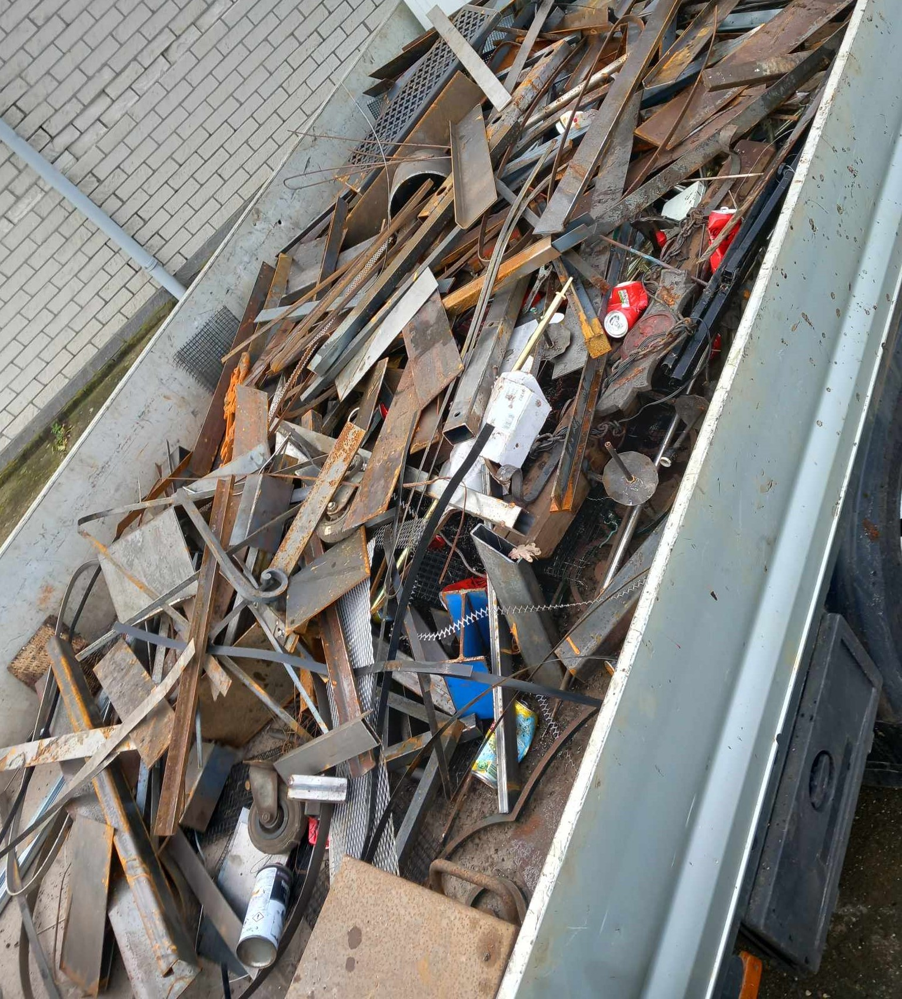
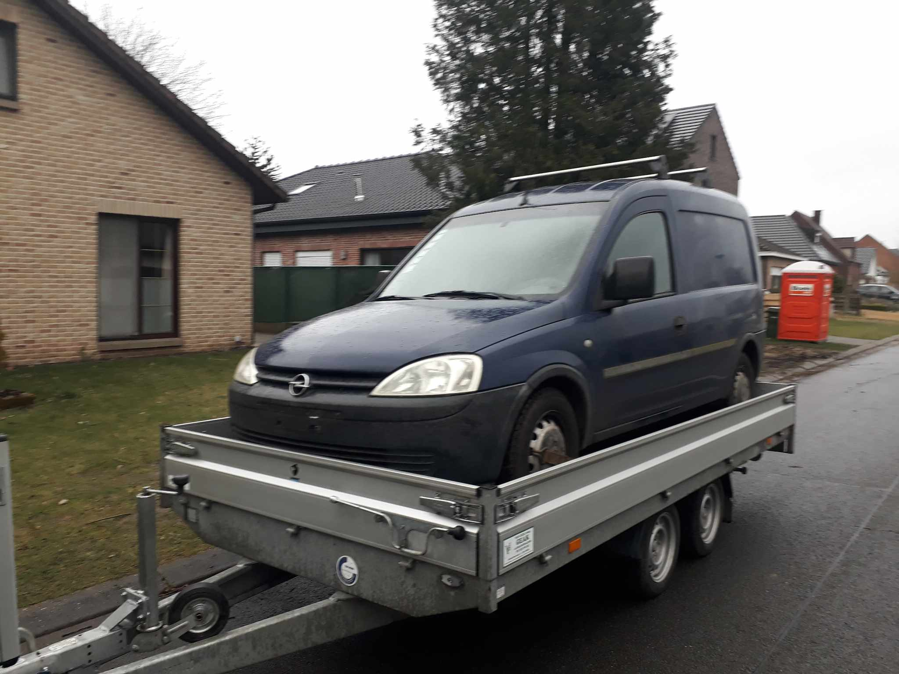
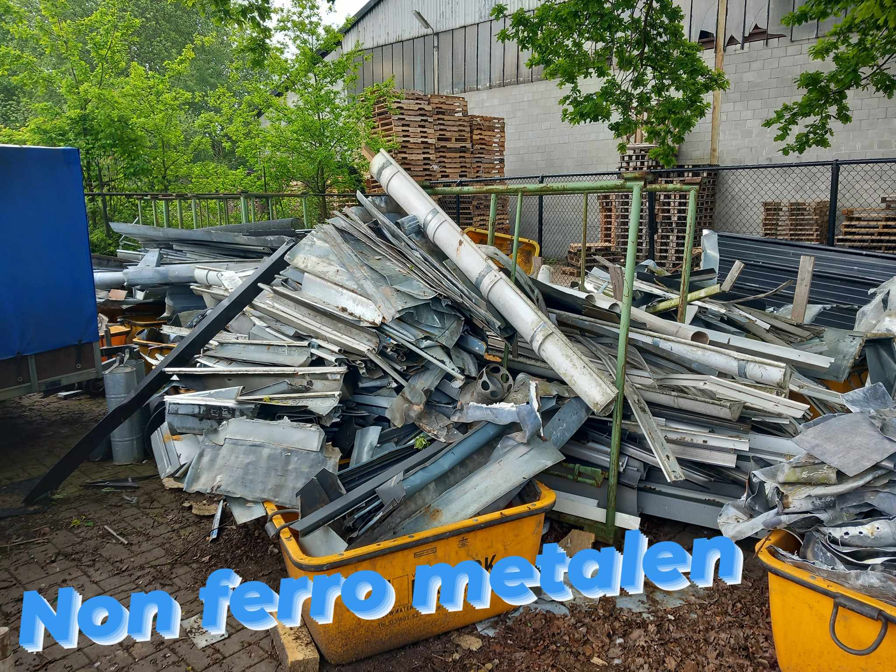
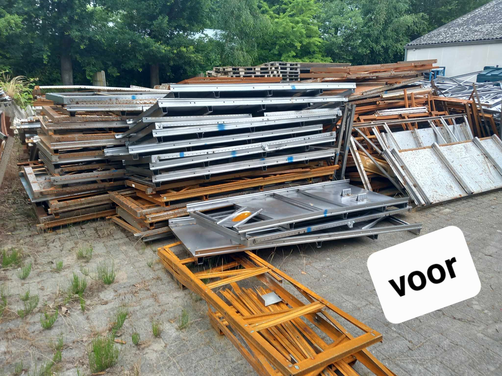
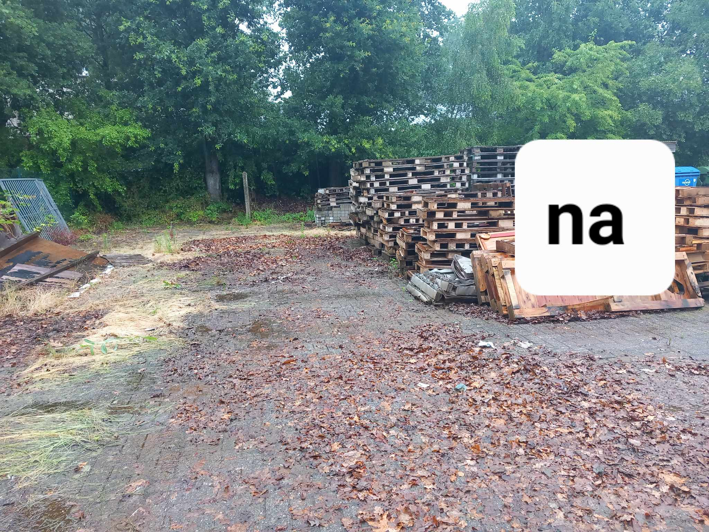

Oud ijzer & Metaalhandel
0487 74 84 93
Bij ons kan u terecht voor het laten ophalen van al uw oud ijzer, auto's , aanhangwagens en machines.
wij zijn OVAM erkend zowel bedrijven als particulieren kunnen op ons rekenen. Wij doen enkel ophaling.
Wij zijn al jaren gekend voor onze snelle en correcte service.
Wij halen uw oude metalen op in provincie Antwerpen , kempen en omstreken.
Heeft u grote hoeveelheden van ijzer, koper, zink , lood , aluminium, en andere metalen dan kunnen wij zorgen voor een gratis ophaling en afhankelijk van het type metaal kan er gepraat worden over een vergoeding.
Indien aankoop van grotere volumes worden deze cash of via overschrijving betaald.
 Heeft u een magazijn, huis, garage of tuin die volstaat met metaalafval en weet u niet hoe je er aan moet beginnen?
Mag u ons altijd vrijblijvend contacteren.
 De grote troef van KS Metals is de jaren ervaring. Wij schatten dan ook de waarde van uw oud ijzer correct in.